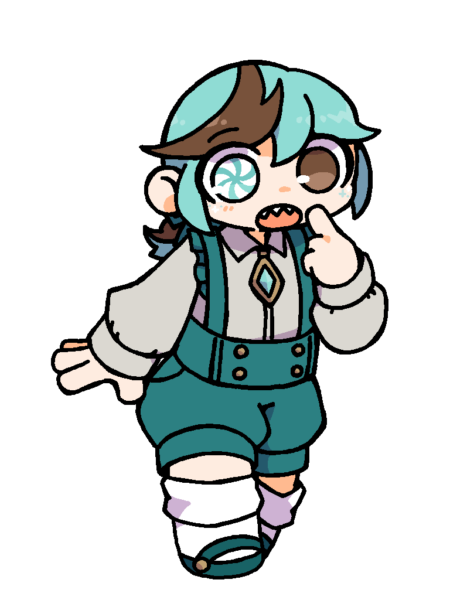

チョコレートとイタズラが大好きな男の子。ミミ程ではないが、彼も中々のトラブルメーカー。少し大人びたい年頃で、一人称をトトから僕に変えている途中。体がお菓子で出来ていて、強い衝撃を受けると割れてしまう。でも痛覚は無いし、くっつけて冷やし固めれば元通りになる。
【性別】男性 【一人称】僕 / トト (素) 【身長】124cm 【好きなもの】チョコレート (特にミント味) 【苦手なもの】海藻 / 蟻
←Back